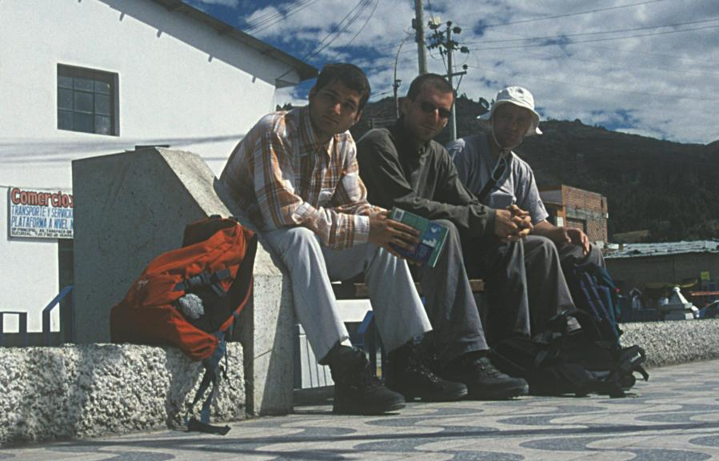
Aurél, Péter, Dani (Huaraz)
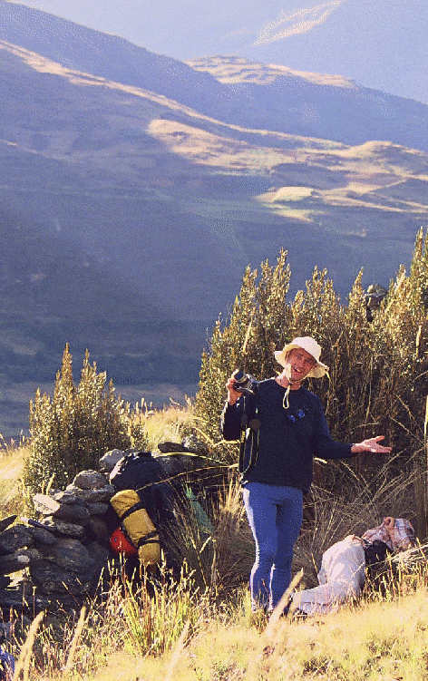
Dani, Aurél
(animation! wait a few seconds for the second frame)
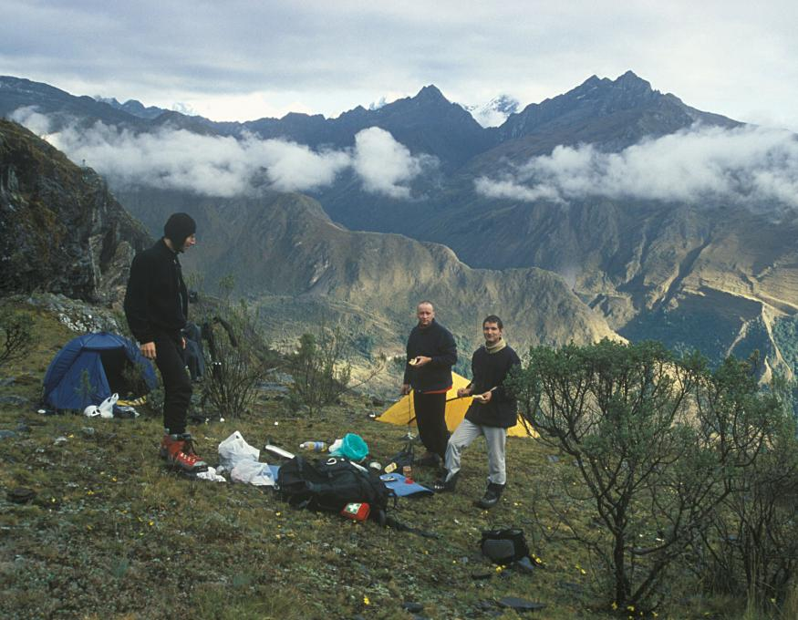
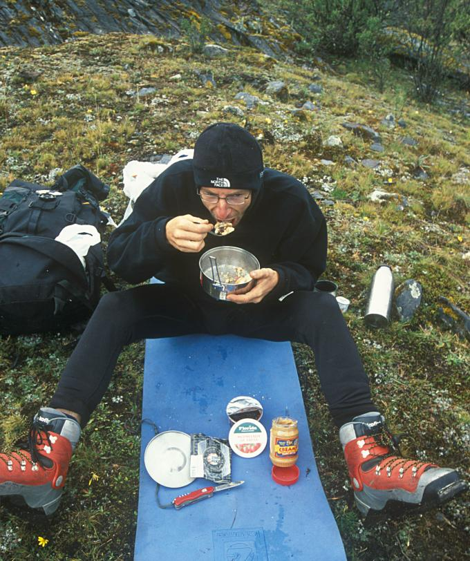
Császármorzsa (kenyérmorzsa + lekvár + mogyorókrém + szalonna)
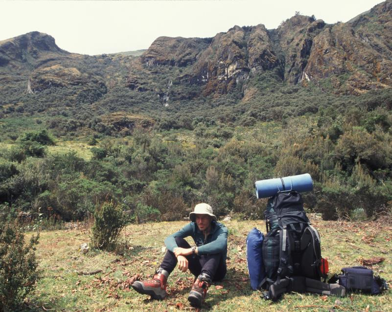
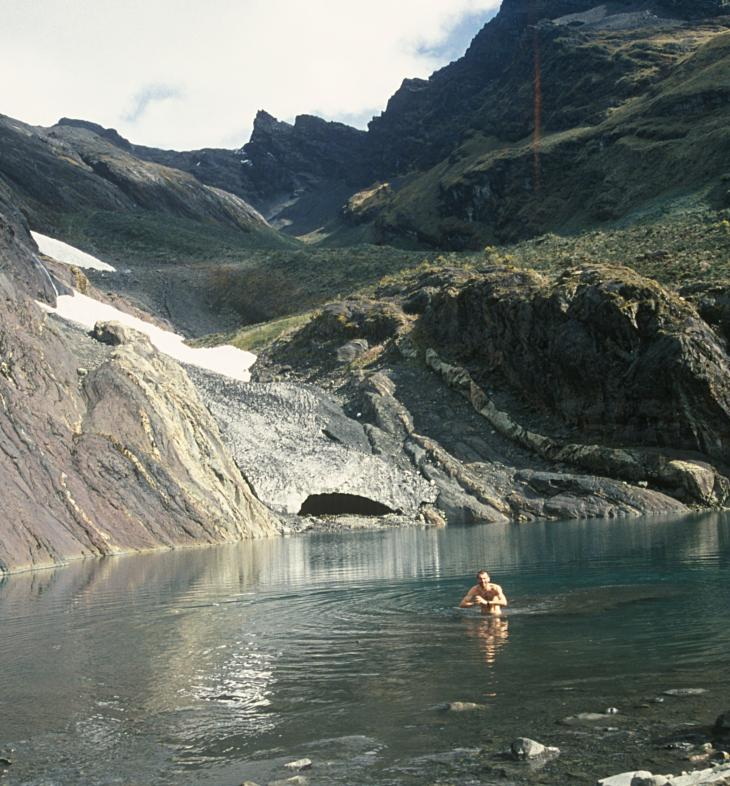
7.5 °C
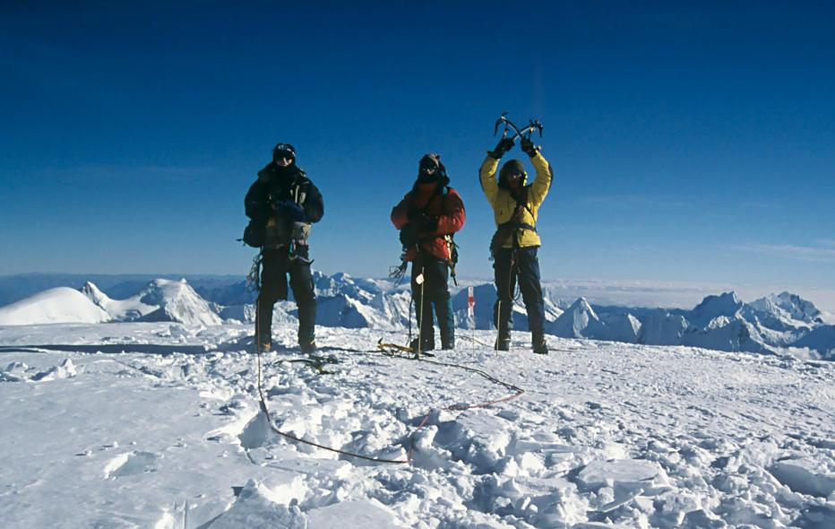
-25 °C, 6768m (Huascaran)
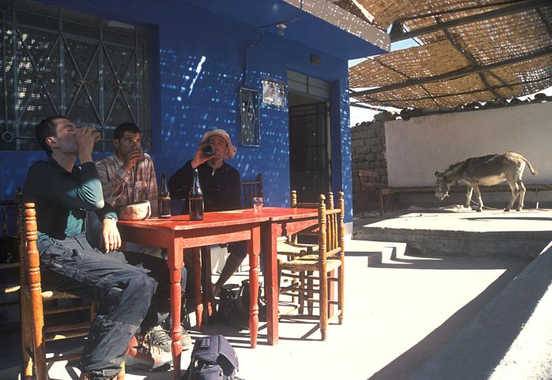
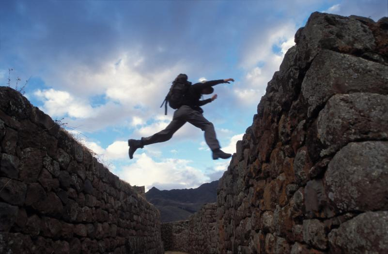
Inca ruins at Pisac
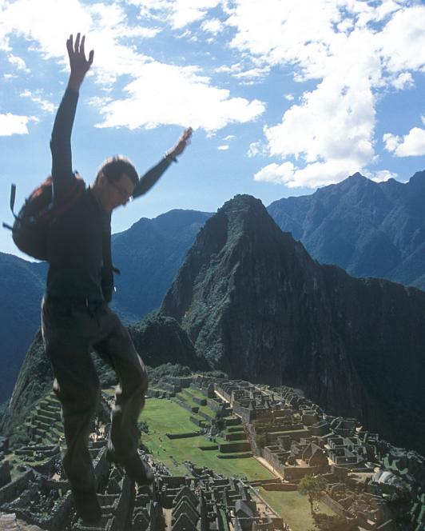 Machu Picchu
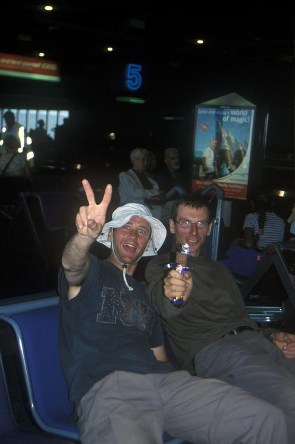
Reward for hard work.
(how to make 55 pence from 27 in London Heathrow)
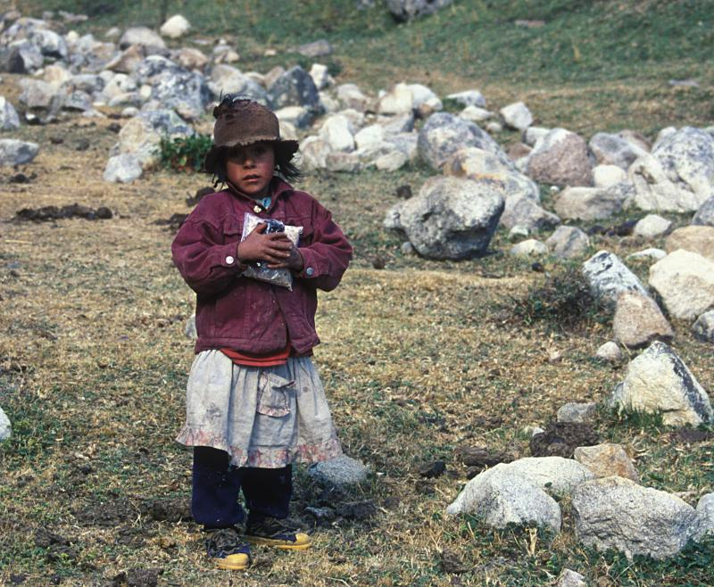